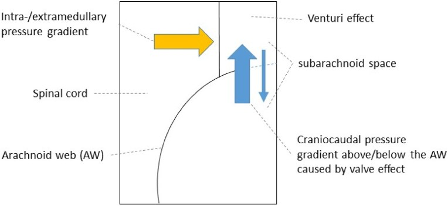
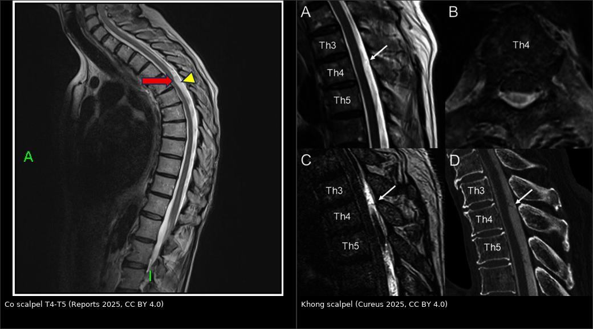
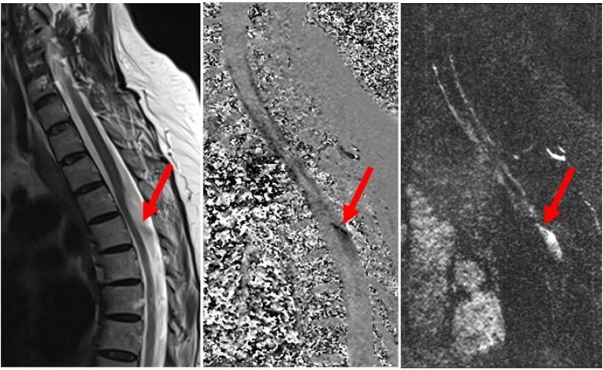
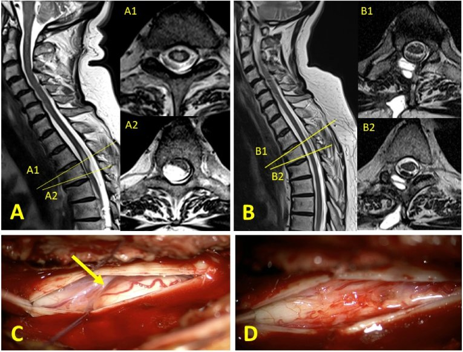
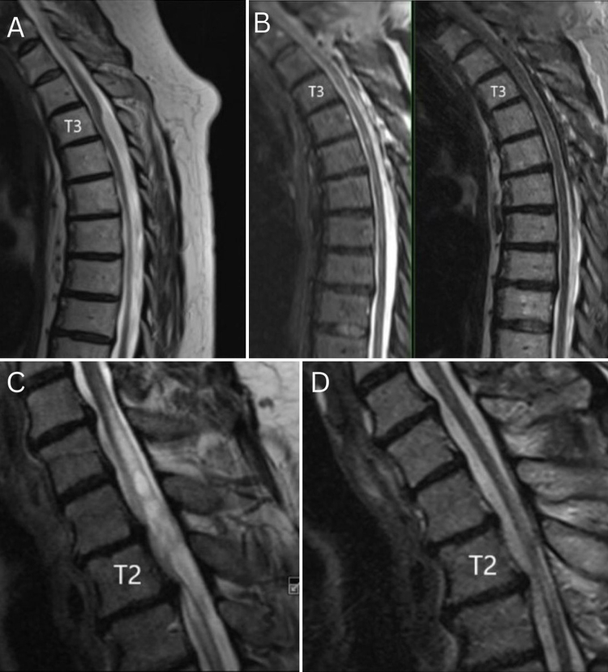
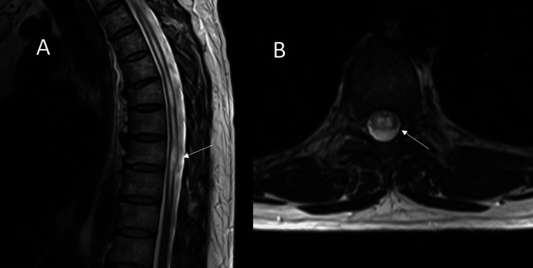
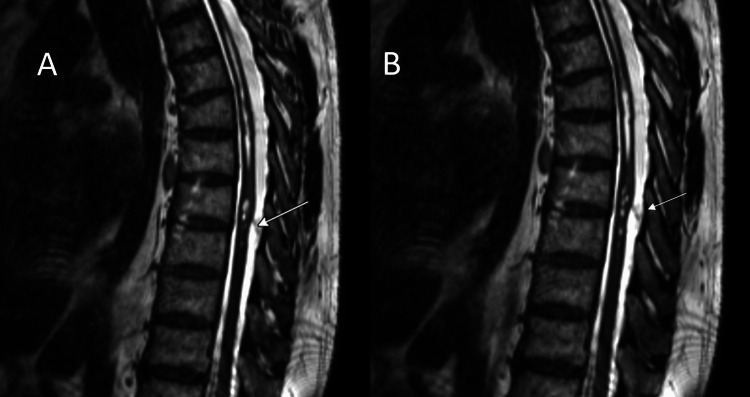
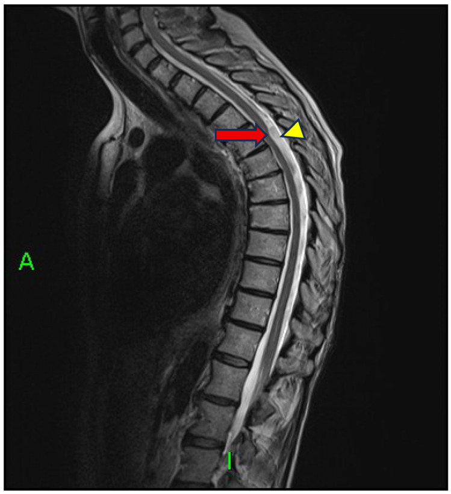
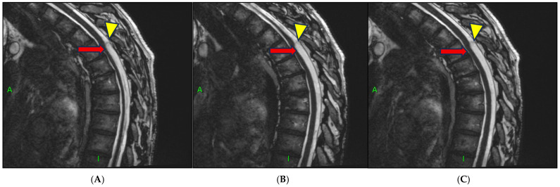
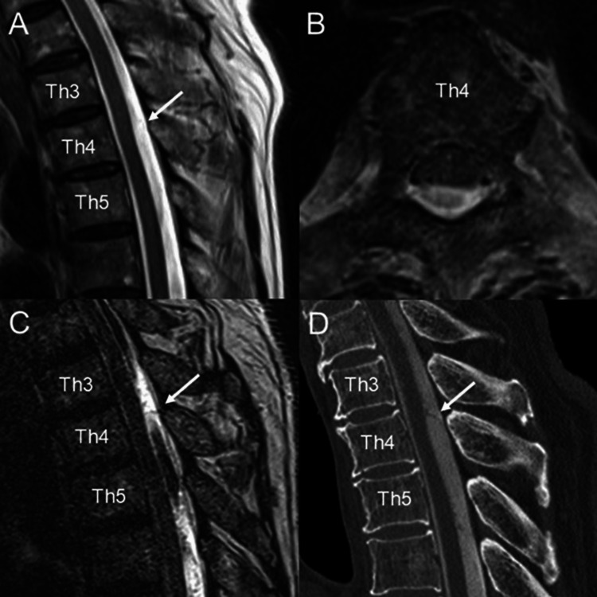

255 — Màng nhện lưng & dấu "scalpel" / Dorsal spinal arachnoid web and the scalpel sign
Tags: pattern:scalpel-sign pattern:dan-mang-nhen pattern:chen-ep-tuy pattern:gian-tuy pattern:tac-dong-dich-nao-tuy vung:tuy-song vung:ong-song protocol:MRI-cot-song protocol:MRI-dong-hoc-csf protocol:3D-CISS protocol:CT-tuy-myelo score:tJOA score:McCormick
Mức chắc chắn (certainty): tổng hợp y văn (literature synthesis) — 3 loạt mổ lớn (17 ca, Brain Spine 2025, PMC12337197; 18 ca, J Neurosurg Case Lessons 2026, PMC12951421; 12 ca nội soi ống, Brain Spine 2026, PMC13147814) + 1 loạt giải phẫu bệnh trong cơ sở dữ liệu 1.039 ca giãn tủy (Neurospine 2025, PMC12518900) + 3 ca nguyên văn có ảnh (Cureus 2026 PMC13358518; Reports 2025 PMC12643434; Cureus 2025 PMC11911252). Không có thử nghiệm ngẫu nhiên; mọi ngưỡng xử trí là tổng hợp thực hành, chỗ suy luận được ghi rõ.
Câu chốt: màng nhện lưng (spinal arachnoid web, SAW) không phải khối u và không phải nang — đây là một dải màng ngang dày ở mặt lưng khoang dưới nhện, chặn dòng dịch não tủy (cerebrospinal fluid, CSF) như van một chiều, làm tủy bị đẩy ra trước + lõm mặt lưng (dấu scalpel), và gây giãn tủy (syrinx) ở hoặc ngay trên mức màng. Ba câu để không bỏ sót: (1) tổn thương nằm LƯNG tủy (không phải trước) ở ngực trên–giữa (T2–T8); (2) tủy lệch ra trước + khoang dịch não tủy phía sau giãn rộng chứ không có khối ngấm thuốc; (3) dải màng chỉ thấy rõ trên 3D-CISS/T2 SPACE hoặc CT tủy cản quang — bỏ sót vì "MRI thường không thấy gì" là chuyện thường, và không có dấu scalpel cũng không loại trừ (thể cấp, Cureus 2025, PMC11911252). Đây là nguyên nhân chữa khỏi được của giãn tủy: cắt màng → tủy về vị trí, syrinx xẹp.
1. Tổng quan bệnh học – cơ chế hình ảnh (TẠI SAO)
1.1 Bệnh học: một dải màng ngang, không phải nang, không phải u
- Định nghĩa: SAW là dải mô màng nhện dày, căng ngang trong khoang dưới nhện LƯNG, dính vào màng nhện tạng và màng nhện thành, chia đôi khoang dưới nhện theo chiều trên–dưới. Mô bệnh: lưới mô liên kết lỏng, tăng sợi collagen, xen tế bào màng não EMA dương (Brain Spine 2025, PMC12337197); loạt giải phẫu bệnh khác mô tả xơ hóa + tế bào màng não + thể vôi hóa psammoma, cytokeratin (+), EMA (+), SSTR2 (+), Ki-67 1% (Neurospine 2025, PMC12518900) — tức mô màng não lành tính, không tân sinh.
- Vì sao hay ở ngực trên–giữa: khoang dưới nhện lưng ở đoạn chuyển tiếp cổ–ngực rộng nhất và có nhiều vách màng nhện lưng (dorsal septa) — y văn cho rằng đây là yếu tố giải phẫu thuận lợi để mô màng nhện dày lên thành dải (giả thuyết được bàn trong PMC12337197, chưa chứng minh); cả 3 loạt đều ghi nhận tổn thương chỉ ở ngực, T2–T3 hay gặp nhất (6/12 ca, Brain Spine 2026, PMC13147814), điểm lệch tủy tối đa thường ở T3–T4 (Brain Spine 2025, PMC12337197).
- Không có tiền sử chấn thương/viêm màng nhện: loạt 17 ca không ca nào có chấn thương, xuất huyết hay viêm màng nhện trước đó, và mô bệnh không có dấu viêm màng nhện dính (PMC12337197) — nên đừng gọi là "viêm màng nhện dính" khi không có tiền sử; thể dính lan tỏa là bệnh khác (bài 254).
- Dịch tễ thực dụng: không có số liệu quần thể. Trong cơ sở dữ liệu 1.039 ca giãn tủy, chỉ 15 ca (1,4%) là giãn tủy "vô căn" thật ra do màng nhện ẩn (Neurospine 2025, PMC12518900). Tuổi trung bình 50–61, nam ≈ nữ, BMI cao (34,0 kg/m² và 29,3 ± 5,2 kg/m²) — béo phì là yếu tố nền hay gặp, cơ chế chưa rõ.
1.2 Cơ chế: van một chiều → chênh áp → lõm tủy + giãn tủy
- Dải màng chặn dòng CSF theo chiều dọc, nhưng cho qua một chiều (van) → CSF ứ lại phía trên/dưới dải, tạo chênh áp trong khoang dưới nhện.
- Áp lực khoang dưới nhện lưng tăng cục bộ đè mặt lưng tủy → lõm mặt lưng + đẩy tủy ra trước. Đây là hiệu ứng cơ học, nên tủy bị biến dạng hình lưỡi dao, không phải bị xâm lấn.
- Hẹp khoang dưới nhện → tăng vận tốc dòng CSF cục bộ (hiệu ứng Venturi) → lực "hút" thêm vào tủy (giả thuyết được nêu trong sơ đồ cơ chế, PMC12337197).
- Chênh áp giữa ống trung tâm (central canal) và khoang dưới nhện → CSF vào nhu mô tủy → syrinx, thường ở hoặc ngay trên mức màng (53% trong loạt 17 ca).
- Sinh lý chứng minh: MRI phase-contrast (PC) cine có cổng tim cho thấy xung CSF bị ngắt cả thì tâm thu và tâm trương ngay dưới chỗ lõm tủy — bằng chứng trực tiếp của tắc dòng (PMC12337197).

Sơ đồ mặt cắt dọc ống sống. Mũi tên xanh: chênh áp trên/dưới dải màng do dòng CSF bị hạn chế, dải màng đóng vai van một chiều → CSF ứ một bên, tăng áp lên tủy. Mũi tên vàng: ứ CSF trong ống trung tâm → syrinx. Venturi: khoang dưới nhện hẹp lại làm tăng vận tốc dòng, tạo lực hút vào tủy (giả thuyết). Nguồn: Brain & Spine 2025 (PMC12337197), CC BY 4.0.1.3 Ngưỡng định lượng trụ cột
| Đại lượng | Con số | Nguồn |
|---|---|---|
| Vị trí | Chỉ ngực, ngực trên–giữa T1–T8; T2–T3 hay nhất (50%); lõm tối đa T3–T4 | PMC13147814; PMC12337197 |
| Giãn tủy đi kèm | 53% (9/17) · 17% (2/12) · 2/18 ca | PMC12337197; PMC13147814; PMC12951421 |
| Thời gian từ khởi phát đến chẩn đoán | 12,5 ± 10 tháng (loạt 17 ca) · 14,3 ± 12,9 tháng (loạt 12 ca, 4–51) | PMC12337197; PMC13147814 |
| Tuổi trung bình | 55,5 ± 10,3 · 61,1 ± 8,8 (50–80) · 54,7 | PMC12337197; PMC13147814; PMC12951421 |
| Triệu chứng | Rối loạn cảm giác 65% · yếu chi dưới 59% · thất điều 59% · đau lưng 53% · đau thần kinh 41% · rối loạn cơ tròn 1/17 (6%) | PMC12337197 |
| Tỉ lệ syrinx/tủy trên MRI | 0,70 ± 0,07 (0,54–0,88) — ≥ 0,5 là syrinx có ý nghĩa trong loạt này | PMC12518900 |
| Mức xẹp syrinx sau mổ | 12,2% – 100%, trung bình 29,6% (theo dõi 18–42 tháng) | PMC12518900 |
| Cải thiện sau mổ | tJOA 8 ± 1,1 → 9,2 ± 1,3 (p < 0,02, n = 10); 8/10 cải thiện, 1 không đổi, 1 xấu đi | PMC12337197 |
| Dấu scalpel mất trên phim sau mổ | 46,7% (7/15) trong loạt 18 ca | PMC12951421 |
| Mổ lại | 2/12 (17%): 1 rò CSF, 1 cắt chưa hết | PMC13147814 |
2. Mẫu hình + chẩn đoán phân biệt theo vị trí (Gamut)
Mẫu hình chốt: tủy ngực bị đẩy ra TRƯỚC + lõm mặt lưng tại một điểm, khoang CSF phía sau giãn rộng, không có khối ngấm thuốc, ± syrinx ở/trên mức đó; dải màng ngang thấy trên 3D-CISS / CT tủy; bệnh nhân 50–60 tuổi, BMI cao, triệu chứng tủy ngực tiến triển 1 năm.
2.1 Gamut theo hướng tủy bị đẩy (câu hỏi số 1 khi đọc)
| Hướng tủy bị đẩy | Thực thể | Vì sao khác nhau |
|---|---|---|
| Ra TRƯỚC, lõm LƯNG | Màng nhện lưng (SAW); nang nhện lưng; giãn màng cứng (dural ectasia) | Cả ba đẩy tủy ra trước; khác nhau ở có/không vỏ nang và dải màng ngang |
| Ra SAU, lõm BỤNG | Thoát vị tủy ra trước (ventral cord herniation, VCH) | Tủy chui qua khuyết màng cứng mặt bụng — tủy nằm sát màng cứng trước, mất khoang CSF trước |
| Không đẩy, tủy to ra | U nội tủy (ependymoma, astrocytoma), myelomalacia, presyrinx | Tổn thương trong tủy; ngấm thuốc là chốt |
| Tủy bình thường, mạch bất thường | Rò động–tĩnh mạch màng cứng (dural AVF) | Phù tủy + flow void màng cứng + giãn tĩnh mềm; bỏ sót = liệt không hồi phục |
| Dính lan tỏa, không khu trú | Viêm màng nhện dính (arachnoiditis) sau viêm/xuất huyết/mổ | Bó rễ dính thành chùm, màng dày lan tỏa, ngấm màng |
2.2 Mnemonic SCALPEL (đọc đúng dấu hiệu)
- S — Sagittal T2: đường viền tủy hình lưỡi dao — mặt lưng lõm, mặt bụng lồi ra trước.
- C — CSF phía sau giãn rộng: khoang tăng tín hiệu T2 sau tủy rộng bất thường so với trên/dưới.
- A — Axial: tủy dẹt mặt lưng, không có khối trong khoang dưới nhện.
- L — Level: ngực trên–giữa (T2–T8); ngoài vùng này phải nghĩ chẩn đoán khác.
- P — PC cine: xung CSF mất ngay dưới chỗ lõm.
- E — Effect, không mass: bệnh phát hiện qua hiệu ứng lên tủy, bản thân màng thường không thấy trên MRI 3 mm.
- L — Look again with CISS/CT myelography khi MRI thường "không kết luận".
3. Bảng so sánh phân biệt (ma trận đối chiếu)
| Thực thể (entity) | Hình ảnh điển hình | Chốt vào (rule-in) | Chốt loại (rule-out) | Gợi ý xác nhận |
|---|---|---|---|---|
| Màng nhện lưng (SAW) | Lõm mặt lưng tủy ngực trên, CSF sau giãn, ± syrinx ở/trên mức, không ngấm thuốc | Dấu scalpel + dải màng ngang trên 3D-CISS/CT tủy + xung CSF mất dưới chỗ lõm | Khối ngấm thuốc trong tủy → u; tủy chui ra trước sát màng cứng bụng → VCH | 3D-CISS; PC cine; CT tủy |
| Nang nhện lưng (dorsal arachnoid cyst) | Túi dịch hình vòm chiếm khoang dưới nhện lưng, hiệu ứng khối rõ, có thể kèm SAW (cơ chế van) | Vỏ nang rõ, hình vòm, đẩy tủy ra trước mạnh | Chỉ có dải màng mỏng, không túi dịch → SAW | 3D-CISS; theo dõi tăng kích thước; mổ thấy vỏ nang |
| Thoát vị tủy ra trước (VCH) | Tủy lệch ra TRƯỚC, mất khoang CSF trước tủy, tủy áp sát màng cứng bụng, ± syrinx | Tủy nằm trước, sát màng cứng, khoang trước mất | CSF dư phía SAU + lõm lưng → SAW | 3D-CISS; CT tủy (thấy khuyết màng cứng bụng) |
| Viêm màng nhện dính | Bó rễ dính chùm, màng dày lan tỏa nhiều tầng, ngấm màng, ± nang | Tiền sử viêm màng não/xuất huyết/mổ + dính lan tỏa + ngấm màng | Một dải ngang đơn độc, không viêm, không tiền sử → SAW | MRI + gadolinium; mô bệnh |
| U nội tủy (ependymoma/astrocytoma) | Tủy to ra, ngấm thuốc, bờ không rõ, ± nang trong u | Ngấm thuốc trong tủy + tủy to | Không ngấm, tủy dẹt chứ không to → SAW | MRI + gadolinium; mô bệnh |
| Rò động–tĩnh mạch màng cứng | Flow void màng cứng lưng, tủy phù tăng T2 dài, giãn tĩnh mềm | Flow void + phù tủy lan dài + tăng tín hiệu sau tiêm | Không flow void, tủy biến dạng khu trú → SAW | MRA/CTA; DSA là chuẩn |
| Giãn tủy sau chấn thương (bài 254) | Syrinx dưới mức chấn thương, tủy teo, ± dính màng | Tiền sử chấn thương tủy + syrinx dưới mức tổn thương | Không chấn thương + syrinx trên/ngang mức lõm lưng → SAW | MRI; PC cine |
| Giãn tủy vô căn (IS) | Syrinx không rõ nguyên nhân, không lõm lưng rõ | Loại trừ hết nguyên nhân khác — nhưng 1,4% "vô căn" thật ra có màng ẩn | Có scalpel sign hoặc tắc dòng CSF → không "vô căn" | CT tủy; PC cine; mổ thấy màng |

Trái: T2W sagittal — lõm mặt lưng + CSF sau giãn rộng ở T4–T5 (mũi tên đỏ), khoang sau rộng (đầu mũi tên vàng) — dấu scalpel điển hình (Reports 2025, PMC12643434, CC BY 4.0). Phải: cùng mức T4 nhưng không có dấu scalpel trên T2 thường; chỉ T2 nặng (C) và CT tủy (D) mới thấy cấu trúc dạng màng sau tủy (Cureus 2025, PMC11911252, CC BY 4.0). Ảnh ghép letterbox, không crop.3.1 Ba dấu hiệu cần đọc kỹ
- Dấu scalpel trên sagittal T2: mô tả "lưỡi dao phẫu thuật" — nhưng đừng dừng ở mô tả: phải đo chiều dài đoạn lõm (mm), ghi mức đốt sống, và so bề rộng khoang CSF sau với đoạn trên/dưới.
- Dải màng trên 3D-CISS / T2 SPACE: độ phân giải 0,9 mm cho thấy dải mỏng ngang sau tủy (Reports 2025, PMC12643434; Cureus 2026, PMC13358518). Đây là dấu trực tiếp, còn scalpel là dấu gián tiếp.
- PC cine CSF: đặt ROI vuông góc ống sống ngay trên và dưới chỗ lõm; mất xung dưới chỗ lõm = tắc dòng (PMC12337197). Đây là bằng chứng sinh lý, giúp phân biệt với tủy dẹt do tư thế.

MRI phase-contrast cine có cổng tim. Xung CSF bị ngắt trong cả thì tâm thu và tâm trương ở đoạn dưới chỗ lõm mặt lưng tủy — hình ảnh trực tiếp của tắc dòng do dải màng. Nguồn: Brain & Spine 2025 (PMC12337197), CC BY 4.0.4. Protocol chụp + hệ phân độ/điểm chuẩn hóa
4.1 Protocol theo tình huống
| Tình huống | Chuỗi bắt buộc | Mục đích |
|---|---|---|
| Nghi tủy ngực (myelopathy) lần đầu | MRI toàn bộ tủy sống: sagittal T2 3 mm, sagittal T1, axial T2 tại mức tổn thương; gadolinium nếu nghi u/viêm | Phát hiện lõm lưng + syrinx; đừng chỉ chụp đoạn ngực — syrinx có thể lên cổ |
| MRI thường không kết luận | 3D-CISS / T2 SPACE / FIESTA lát 0,9 mm, dựng lại sagittal + axial; hoặc CT tủy cản quang | Thấy dải màng trực tiếp; CT tủy là chuẩn khi MRI mơ hồ (PMC11911252) |
| Xác nhận cơ chế trước mổ | PC cine CSF (cổng tim) trên/dưới chỗ lõm | Chứng minh tắc dòng, tiên lượng đáp ứng cắt màng |
| Trước mổ | MRI toàn bộ tủy + 3D-CISS + X-quang/fluoroscopy đánh dấu mức | Chọn mức mở cung sau; tránh cắt sót (đã gặp: 1/12 ca mổ lại vì cắt chưa hết, PMC13147814) |
| Sau mổ | MRI 6–12 tuần rồi 3–6 tháng: vị trí tủy, syrinx, có dải còn lại | Syrinx xẹp chậm (12,2–100%, trung bình 29,6%, PMC12518900); đừng kết luận thất bại sớm |
4.2 Thang điểm thực hành
- tJOA (thoracic Japanese Orthopaedic Association, 0–11): điểm càng thấp càng nặng; loạt 17 ca 8 ± 1,1 → 9,2 ± 1,3 sau mổ. Dùng để theo dõi tiến triển và đáp ứng, không dùng để chọn mổ một mình.
- Modified McCormick (I–V): thang chức năng dùng trong loạt nội soi ống (12 ca, McCormick II–III trước mổ → không ca nào xấu đi sau mổ), PMC13147814.
- Không có RADS/score riêng cho SAW — quyết định dựa trên triệu chứng tiến triển + hình ảnh chắc chắn, không dựa vào kích thước.
4.3 Flowchart xử trí
flowchart TD
A[Myelopathy ngực: diễn tiến 1 năm, BMI cao] --> B[MRI toàn bộ tủy + axial T2]
B --> C{Lõm mặt LƯNG + CSF sau giãn?}
C -->|Không| Z[Xét u nội tủy, VCH, dural AVF, dính màng]
C -->|Có| D[3D-CISS + PC cine]
D --> E{Có dải màng / tắc dòng CSF?}
E -->|Không chắc| F[CT tủy cản quang]
E -->|Có| G{Có triệu chứng tiến triển?}
F --> G
G -->|Không| H[Theo dõi MRI 6-12 tháng]
G -->|Có| I[Cắt màng ngang + giải phóng dính: mở cung sau / nội soi ống 20 mm]
I --> J[MRI 6-12 tuần: vị trí tủy, syrinx]
J --> K{Syrinx còn to + triệu chứng?}
K -->|Không| L[Theo dõi tiếp: syrinx xẹp chậm tới 42 tháng]
K -->|Có| M[Kiểm tra cắt sót / dính tái phát / rò CSF]
- Chỉ định mổ: triệu chứng tủy tiến triển + hình ảnh chắc chắn. Loạt 17 ca: 10/17 (59%) được mổ, 7 ca theo dõi vì triệu chứng nhẹ/ổn định; nhóm không mổ tJOA không đổi (9,2 → 9,1) — theo dõi là lựa chọn hợp lý ở ca nhẹ (PMC12337197).
- Kỹ thuật: mở cung sau + mở màng cứng + cắt dải màng và giải phóng dính tới khi thấy tủy đập và CSF lưu thông. Loạt 12 ca dùng ống nội soi 20 mm (9 ca không giãn, 3 ca giãn): 110 ± 30 phút, nằm viện 4,9 ± 2,1 ngày, không biến chứng thần kinh vĩnh viễn; 2 ca mổ lại (1 rò CSF, 1 cắt sót) (PMC13147814).
- Không đặt shunt syrinx ngay: với SAW, cắt màng là điều trị nguyên nhân; shunt chỉ dành cho giãn tủy tái phát/không hồi phục sau khi đã giải phóng dính (Neurospine 2025, PMC12518900).

Bệnh nhân trong loạt 17 ca. (A) Trước mổ: dấu scalpel — tủy đẩy ra trước, lõm mặt lưng; (A1, A2) axial tại mức tổn thương và mức lệch tối đa. (B) Sau mổ: tủy về vị trí, hết lõm. (C) Dải màng nhện căng ngang nhìn qua kính vi phẫu; (D) sau khi cắt. Nguồn: Brain & Spine 2025 (PMC12337197), CC BY 4.0.
(A, B) Bệnh nhân 12: scalpel sign T3–4 trước mổ và mất dấu sau mổ. (C, D) Bệnh nhân 13: syrinx làm tủy giãn + chèn ép trước mổ, sau mổ syrinx xẹp một phần nhưng còn giãn ống trung tâm đoạn xa. Lưu ý: dấu scalpel chỉ mất ở 46,7% (7/15) ca trong loạt 18 ca — đừng lấy hình ảnh làm tiêu chí thành công duy nhất. Nguồn: J Neurosurg Case Lessons 2026 (PMC12951421), CC BY-NC-ND 4.0 (nguyên bản).5. Biến thể bình thường và cạm bẫy
5.1 Biến thể bình thường dễ đọc quá
- Khoang dưới nhện lưng rộng ở đoạn cổ–ngực là bình thường; chỉ gọi bệnh khi có lõm tủy khu trú hoặc tắc dòng CSF.
- Tủy hơi dẹt mặt lưng do tư thế nằm ngửa — kiểm tra lại bằng axial và so sánh trên/dưới; đừng chẩn đoán SAW chỉ trên một lát sagittal.
- Giãn ống trung tâm nhỏ (central canal) ở người trẻ là bình thường, không phải syrinx; trong loạt giãn tủy được mổ, tỉ lệ syrinx/tủy lớn nhất là 0,70 ± 0,07 (0,54–0,88) — dùng tỉ lệ này để mô tả mức độ, không phải để chẩn đoán một mình (PMC12518900).
5.2 Cạm bẫy (pitfall)
- "MRI thường bình thường nên không có gì" — dải màng 1–2 mm thường không thấy trên lát 3 mm; ca 77 tuổi chỉ chẩn đoán được nhờ T2 nặng + CT tủy (PMC11911252). Luôn nâng cấp kỹ thuật khi lâm sàng mạnh.
- "Không có scalpel sign = không phải màng nhện" — SAI. Thể diễn tiến cấp có thể chưa hình thành dấu điển hình; tủy chỉ biến dạng nhẹ trên T2 thường (PMC11911252).
- Nhầm với u nội tủy — nhiều ca được gửi đi với chẩn đoán "u trong tủy", "myelomalacia không rõ nguyên nhân", "viêm tủy", "dính tủy ra trước" (PMC12337197). Không ngấm thuốc + không làm tủy to là chốt loại u.
- Nhầm với thoát vị tủy ra trước (VCH) — hướng lệch quyết định: VCH tủy ra trước sát màng cứng bụng, mất CSF trước; SAW có CSF sau dư + lõm lưng. Nhầm → đường mổ sai (VCH cần vá màng cứng bụng, không phải cắt màng lưng).
- Dấu scalpel cũng gặp trong nang nhện lưng và VCH — dấu hiệu không đặc hiệu tuyệt đối; phải tìm dải màng hoặc vỏ nang (Reports 2025, PMC12643434). SAW và nang nhện có thể cùng tồn tại do cơ chế van (J Neurosurg Case Lessons 2024, PMC11337934).
- Bỏ sót rò động–tĩnh mạch màng cứng — bệnh cảnh giống hệt (myelopathy tiến triển, tủy tăng T2); luôn tìm flow void và giãn tĩnh mềm trên axial T2. Bỏ sót = liệt không hồi phục dù đã "điều trị giãn tủy".
- Cắt chưa hết — 1/12 ca mổ lại sau 3 năm vì dải màng còn; MRI 6–12 tuần sau mổ là bắt buộc để phát hiện sớm (PMC13147814).
- Rò CSF sau mổ — 1/12 ca (8%) có tụ dịch dưới màng cứng, tự hết sau vá rò; đóng màng cứng kín, keo fibrin ở người BMI cao (yếu tố nền của nhóm bệnh này).
- Xấu đi sau mổ do biến chứng nhỏ, không do bệnh — 1 ca trong loạt 17 ca bị xuất huyết dưới/ngoài màng cứng nhẹ rồi dính tủy + syrinx mới; theo dõi sát 24–48 giờ đầu (PMC12337197).
- Kỳ vọng syrinx xẹp ngay — xẹp chậm và không hoàn toàn: 12,2–100%, trung bình 29,6% sau 18–42 tháng; triệu chứng cải thiện trước hình ảnh (PMC12518900).
6. Tự lượng giá — Blind Quiz
Ca 1 — Nam 47 tuổi, đau ngực giữa tiến triển + tê bàn chân hai bên 6 tháng. Nhìn sagittal và axial T2 trước, mô tả trước.

- Câu hỏi: Tủy bị đẩy về hướng nào? Có khối trong khoang dưới nhện không? Ba chẩn đoán phân biệt hàng đầu? Chuỗi nào để xác nhận?
Bấm để hiện đáp án (findings + chẩn đoán)
- Dấu hiệu: sagittal + axial T2 — lõm mặt lưng tủy tại T8–T9, tủy dẹt mặt lưng, không có khối đặc hay nang trong khoang dưới nhện; có giãn tủy ngực đi kèm.
- Chẩn đoán: màng nhện lưng (SAW) với syrinx thứ phát — dấu scalpel kinh điển.
- Xác nhận: 3D-CISS cho thấy dải màng ngang sau tủy (ảnh dưới).
- Điều trị: mở cung sau T8–T9 + mở màng cứng + cắt dải màng; sau mổ hết triệu chứng cảm giác trong 2 tuần, syrinx giảm dần trên phim theo dõi.
- Nguồn: Cureus 2026 (PMC13358518), CC BY 4.0.

Ca 2 — Nữ 57 tuổi, đau cổ–lưng mạn, yếu hai chân + dáng đi loạng choạng. MRI thường "không kết luận". Nhìn T2 sagittal.

- Câu hỏi: Dấu hiệu nào gọi là "scalpel"? Vì sao MRI thường không kết luận? Nang hay màng? 3D-CISS thêm được gì?
Bấm để hiện đáp án (findings + chẩn đoán)
- Dấu hiệu: lõm mặt lưng + đẩy tủy ra trước tại T4–T5 (mũi tên đỏ) + khoang CSF sau giãn rộng (đầu mũi tên vàng) → dấu scalpel; trên 3D-CISS thấy thêm đường viền hình vòm của nang nhện lưng và dải màng.
- Vì sao MRI thường mờ: dải màng/vỏ nang rất mỏng, lát 3 mm không đủ phân giải — phải dùng 3D-CISS 0,9 mm.
- Chẩn đoán: màng nhện lưng kèm nang nhện lưng — dấu scalpel không đặc hiệu tuyệt đối, có thể gặp trong nang và trong thoát vị tủy ra trước.
- Nguồn: Reports 2025 (PMC12643434), CC BY 4.0.

Ca 3 — Nam 77 tuổi, yếu hai chân TIẾN TRIỂN NHANH trong vài tuần. Nhìn T2 thường trước.

- Câu hỏi: Có dấu scalpel không? Nếu không, có loại trừ màng nhện lưng? Làm gì tiếp?
Bấm để hiện đáp án (findings + chẩn đoán)
- Dấu hiệu: (A, B) T2 sagittal + axial — biến dạng lõm nhẹ mặt lưng tủy tại T4, không có dấu scalpel điển hình; (C) T2 nặng và (D) CT tủy cản quang mới thấy cấu trúc dạng màng sau tủy.
- Chẩn đoán: màng nhện lưng thể diễn tiến cấp — bằng chứng không có scalpel sign vẫn là SAW.
- Điều trị: cắt màng + mở cung sau; sau mổ tủy về vị trí, hồi phục thần kinh đáng kể.
- Bài học: khi lâm sàng mạnh mà hình ảnh mờ → nâng cấp kỹ thuật (T2 nặng/3D-CISS/CT tủy), không kết luận "không có gì".
- Nguồn: Cureus 2025 (PMC11911252), CC BY 4.0.
Bài liên quan chéo
- 200 – Tổng quan hệ Thần kinh
- 254 – Giãn tủy sau chấn thương tủy sống — syrinx dưới mức chấn thương, cơ chế dính màng
- 226 – Tủy mềm không chấn thương (SDAVF, nhồi máu tủy, NMO) — myelopathy khởi phát cấp, không biến dạng tủy; hàng DDx bắt buộc
- 250 – Lao nội tủy & lao màng tủy — khối nội tủy ngấm vòng, khác hẳn
- 220 – Ống sống 3 khoang — định khu ngoài/trong màng cứng – nội tủy trước khi gọi tên
Ảnh
- Tên file:
255_*_Modality_SourceID.jpg; nguồn + giấy phép từng ảnh trongimages/CREDITS.md. images/composite_scalpel-vs-khong-scalpel.jpg— ảnh ghép chỉ từ nguồn CC BY 4.0 (PMC12643434 + PMC11911252), letterbox bằngtools/make_composite.py.- Ảnh CC BY-NC-ND (PMC12951421) dùng nguyên bản, không đưa vào composite, không crop.
Không dùng để chẩn đoán độc lập khi chưa có người hướng dẫn.